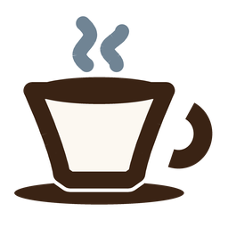
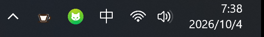
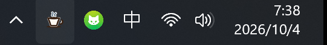
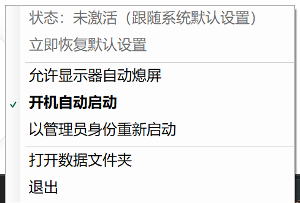

点一下，系统就不睡了。再点一下，原样还回去。
单文件、不需要装任何运行时、不联网、不装服务、不需要管理员。
安装包未做代码签名，从浏览器下载时若弹出「Windows 已保护你的电脑」，点更多信息 → 仍要运行即可。
就在托盘里，跟其它图标待在一起。



就这样，没有别的。
小工具，但该认真的地方没偷懒。
先把电源方案完整读一遍存下来，还的时候按 GUID 精确写回每个值，不是靠猜。
被强杀或崩溃后，下次启动会自动把设置还原。留了 --restore 命令行以防万一。
只有「关闭系统休眠」这一步需要管理员权限，缺了也不影响保活效果。真需要时菜单里有「以管理员身份重新启动」。
菜单和安装器都声明了 per-monitor v2 DPI 感知，4K 200% 缩放下文字是原生渲染的。
菜单里勾「允许显示器自动熄屏」，保活期间屏幕照常熄灭，只是不让系统休眠。
只用系统自带的 csc.exe，不需要 Visual Studio 或 .NET SDK。仓库里有 63 项单元测试和三条真实交互测试。
都是被问得比较多的。
电源方案里的「睡眠时间」「休眠时间」「关闭硬盘时间」「关闭显示器时间」这四项。 激活时把它们设为「从不」，退出时按之前存下来的值精确写回。 另外如果系统开着休眠且当前不是管理员，会尝试关掉它来保证「真的不休眠」——这一步失败也不影响保活效果。
不需要。普通权限就能完成保活。只有「关闭系统休眠」需要，失败会在日志里说明并且照常工作。 需要完整权限时，菜单里有「以管理员身份重新启动」。
完全不会。没有网络代码，不装服务，不写任何服务项。所有数据都在
%LOCALAPPDATA%\Caffeine，卸载时可以选择保留。
菜单里勾上「允许显示器自动熄屏」，保活期间屏幕会照常熄灭，只有系统本身不休眠。
托盘右键菜单里勾「开机自动启动」。也可以用安装器的 --autostart 参数。
Win11 默认只显示「固定」的图标，新程序会躲在托盘右侧的 ^（显示隐藏的图标）里。
点开找到咖啡杯，拖到外面就固定了。
运行 Caffeine-Setup-<版本>.exe --uninstall，或用开始菜单里的卸载项。
加 --delete-data 会连 %LOCALAPPDATA%\Caffeine 一起删掉。
卸载前若正处于保活状态，会先还原设置。